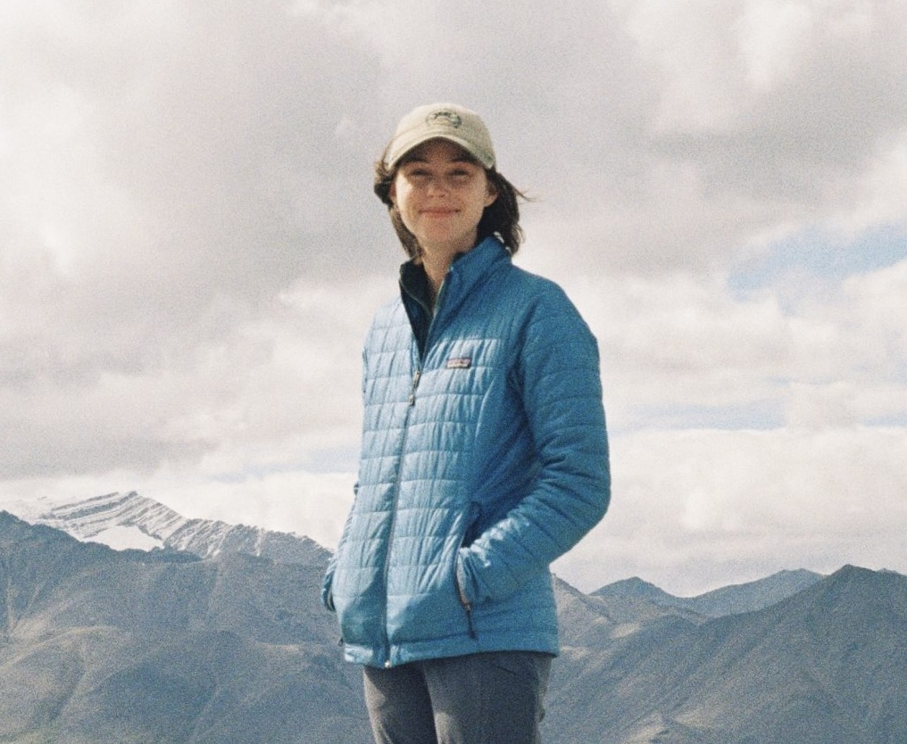

Allison M. Welch
PhD in Earth System Science
I am a biogeochemist focused on understanding the changing carbon cycle. I hope to leverage my education and research for climate change mitigation.
I received my PhD from the Department of Earth System Science at the University of California, Irvine, where I studied how shrub expansion, permafrost vulnerability, and land-atmosphere interactions are reshaping Arctic ecosystems. I am now a Postdoctoral Research Fellow at the University of Alaska, Fairbanks developing remote sensing and machine learning methods for the quantification of methane emission from northern high-latitude lakes. If you'd like to know more about me, my research, or what I'm up to, feel free to browse!